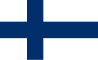

Finlande

To know:
Capital : Helsinki
Population (2018) : 5 millions
Form of the State: Presidential
President of the republic: Alexander Stubb
Ministre: Petteri Orpo
Parliament: Parliament
Official languages: Finnois, Sweden
Cash : Euro
The mainland has nearly 200,000 lakes and shares its land borders with Russia to the east and Sweden and Norway to the north, while the Turku and Åland archipelagos make up most of the island part of the country.
Education
Education is considered one of the fundamental rights of all Finnish citizens. This is the right to receive secondary education (including high school) free of charge. The law guarantees this right for all residents, not just Finnish citizens.
Children in Finland who start school at seven "spent their childhood playing in the nursery", they can learn the alphabet a year before they start school, but nothing is required. Fundamental education is a general culture education provided to all age groups.